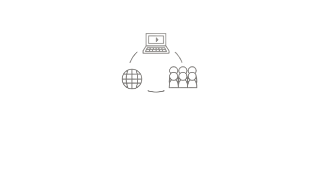

Espalhando tecnologia e deixando o mundo mais florido!!
Conheça mais sobre nosso projeto
Nossos Serviços
A FioreMove é uma empresa que auxilia no monitoramento da tempperatura e
umidade durante o transporte de rosas, facilitando esse gerenciamento para que não haja perdas
dessas flores durante esse processo.
Sobre Nós

A FioreMove é uma pequena empresa de desenvolvimento de sistemas que
possui como principal missão e objetivo trazer soluções soluções eficazes e tecnologias para
os problmeas de humidade e temperatura no transporte de flores.
Nossos Valores
Inovação Empresas que transportam suas rosas precisam monitorar-las
Comprometimento Analisamos, projetamos e desenvolvemos soluções
IntegridadeProduzimos sistemas conectados que conversam entre si e fornecem dados ricos
de uma forma mais simples rápida e eficaz ajudando você a aumentar a produtividade